MixedModelsMakie.jl API
Coefficient Plots
MixedModelsMakie.coefplot — Function
coefplot(xs::Union{MixedModel,MixedModelBootstrap}...; kwargs...)::Figure
coefplot!(fig::Union{GridLayoutBase.GridLayout, GridLayoutBase.GridPosition, GridLayoutBase.GridSubposition, Makie.Figure}, xs::Union{MixedModel,MixedModelBootstrap}...;
show_legend=length(xs) > 1, legend_attributes=(;), kwargs...)
coefplot!(ax::Axis, xs::Union{MixedModel,MixedModelBootstrap}...;
conf_level=0.95, vline_at_zero=true, show_intercept=true,
ptype=nothing,
scatter_attributes=(;),
errorbars_attributes=(;),
show_legend=length(xs) > 1,
legend_attributes=(;),
labels=string.(1:length(xs)),
attributes...)Create a coefficient plot of the requested parameters and associated confidence intervals. When multiple models are supplied, they are overlaid on the same axes for comparison; all models must share the same coefficient names.
For a MixedModelBootstrap, ptype selects which parameters to plot: :β (fixed effects, default), :σ, :ρ, or :θ (see ridgeplot for details; the ASCII aliases :sigma, :rho, :theta are also accepted). ptype is not supported for a plain MixedModel.
group restricts ptype ∈ (:σ, :ρ) to a single grouping factor, e.g. group=:subj. It is not supported for :β/:θ or for a plain MixedModel.
attributes are passed onto both scatter! and errorbars!, while scatter_attributes and errorbars_attributes are passed only onto scatter! and errorbars!, respectively. (Starting with Makie 0.21, unsupported attributes for a given plottype are no longer silently ignored, so it's necessary to separate out the attributes that are only valid for a single plot type.)
labels controls the legend entry for each model (defaults to "1", "2", ...).
show_legend controls placement of the legend. Accepted values:
false: no legendtrueor:bottom: horizontal legend below the axis (default for multi-model figures):top: horizontal legend above the axis:left: vertical legend to the left of the axis:right: vertical legend to the right of the axis:axis: legend embedded inside the axis viaaxislegend
legend_attributes is a named tuple of keyword arguments forwarded to the Makie Legend (or axislegend) constructor.
The mutating methods return the original object.
using CairoMakie
CairoMakie.activate!(; type="svg")
using MixedModels
using MixedModelsMakie
using Random
verbagg = MixedModels.dataset(:verbagg)
gm1 = fit(MixedModel,
@formula(r2 ~ 1 + anger + gender + btype + situ + (1|subj) + (1|item)),
verbagg,
Bernoulli();
progress=false)
coefplot(gm1)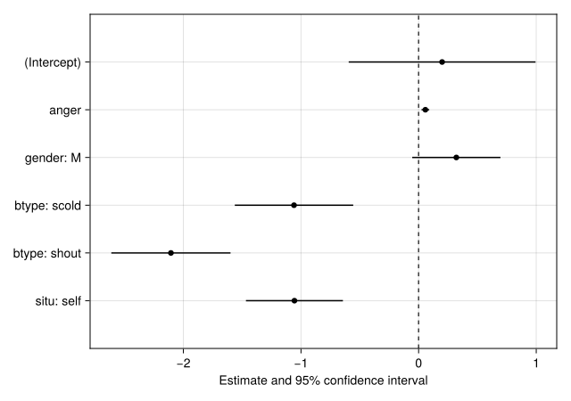
sleepstudy = MixedModels.dataset(:sleepstudy)
fm1 = fit(MixedModel, @formula(reaction ~ 1 + days + (1 + days|subj)), sleepstudy; progress=false)
boot = parametricbootstrap(MersenneTwister(42), 1000, fm1)
coefplot(boot; conf_level=0.999, title="Custom Title")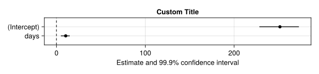
Ridge Plots
MixedModelsMakie.ridgeplot — Function
ridgeplot(xs::MixedModelBootstrap...; kwargs...)::Figure
ridgeplot!(fig::Union{GridLayoutBase.GridLayout, GridLayoutBase.GridPosition, GridLayoutBase.GridSubposition, Makie.Figure}, xs::MixedModelBootstrap...;
show_legend=length(xs) > 1, legend_attributes=(;), kwargs...)
ridgeplot!(ax::Axis, xs::MixedModelBootstrap...;
conf_level=0.95, vline_at_zero=true, show_intercept=true,
ptype=:β,
scatter_attributes=(;),
errorbars_attributes=(;),
band_attributes=(;),
lines_attributes=(;),
show_legend=length(xs) > 1,
legend_attributes=(;),
labels=string.(1:length(xs)),
attributes...)Create a ridge plot for the bootstrap samples of the requested parameters. When multiple bootstrap objects are supplied, they are overlaid on the same axes for comparison; all inputs must share the same coefficient names.
ptype selects which bootstrap parameters to plot: :β (fixed effects, default), :σ (random-effect standard deviations, including the residual), :ρ (random-effect correlations), or :θ (the unconstrained Cholesky parameterization, labeled positionally as θ01, θ02, ... since these lack a natural per-group name). The ASCII aliases :sigma, :rho, :theta are also accepted. show_intercept only applies to :β; it is a no-op for :σ/:ρ/:θ.
group restricts ptype ∈ (:σ, :ρ) to a single grouping factor, e.g. group=:subj. It is not supported for :β/:θ.
Densities are normalized so that the maximum density is always 1. For bounded parameters (:σ ≥ 0, :ρ ∈ [-1, 1], :θ per-element via lowerbd), the density curve is truncated to the parameter's valid range, since kernel smoothing can otherwise leak density past a hard boundary.
Setting histogram=true plots a histogram instead of a KDE for each row (counts normalized the same way). A histogram respects a parameter's bounds by construction, and can show a genuine spike where many bootstrap draws land on a boundary (e.g. a singular fit) — something a smoothed KDE cannot represent. bins is forwarded to StatsBase.fit(Histogram, ...; nbins=bins) when histogram=true; otherwise StatsBase's automatic bin selection is used.
The highest density interval corresponding to conf_level is marked with a bar at the bottom of each density. Setting conf_level=missing removes the markings for the highest density interval.
attributes are passed onto coefplot, band! and lines!. scatter_attributes and errorbars_attributes are passed only onto coefplot. band_attributes and lines_attributes are passed only onto band! and lines!, respectively. (Starting with Makie 0.21, unsupported attributes for a given plottype are no longer silently ignored, so it's necessary to separate out the attributes that are only valid for a single plot type.)
labels controls the legend entry for each model (defaults to "1", "2", ...).
show_legend controls placement of the legend. Accepted values:
false: no legendtrueor:bottom: horizontal legend below the axis (default for multi-model figures):top: horizontal legend above the axis:left: vertical legend to the left of the axis:right: vertical legend to the right of the axis:axis: legend embedded inside the axis viaaxislegend
legend_attributes is a named tuple of keyword arguments forwarded to the Makie Legend (or axislegend) constructor.
The mutating methods return the original object.
ridgeplot(boot)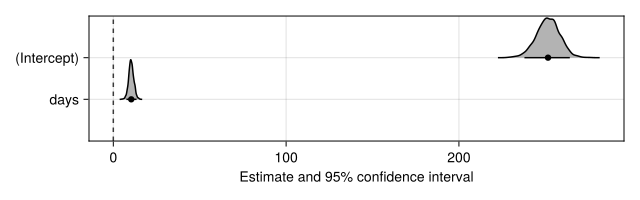
Ridge 2D Plots
MixedModelsMakie.ridge2d — Function
ridge2d(bs::MixedModelBootstrap; ptype=:β, kwargs...)
ridge2d!(f::Union{GridLayoutBase.GridLayout, GridLayoutBase.GridPosition, GridLayoutBase.GridSubposition, Makie.Figure}, bs::MixedModelBootstrap; ptype=:β)Plot pairwise bivariate scatter plots with overlain densities for a bootstrap sample.
ptype specifies the set of parameters to examine, e.g. :β, :σ, :ρ, :θ (the ASCII aliases :sigma, :rho, :theta are also accepted).
The mutating methods return the original object.
ridge2d(boot)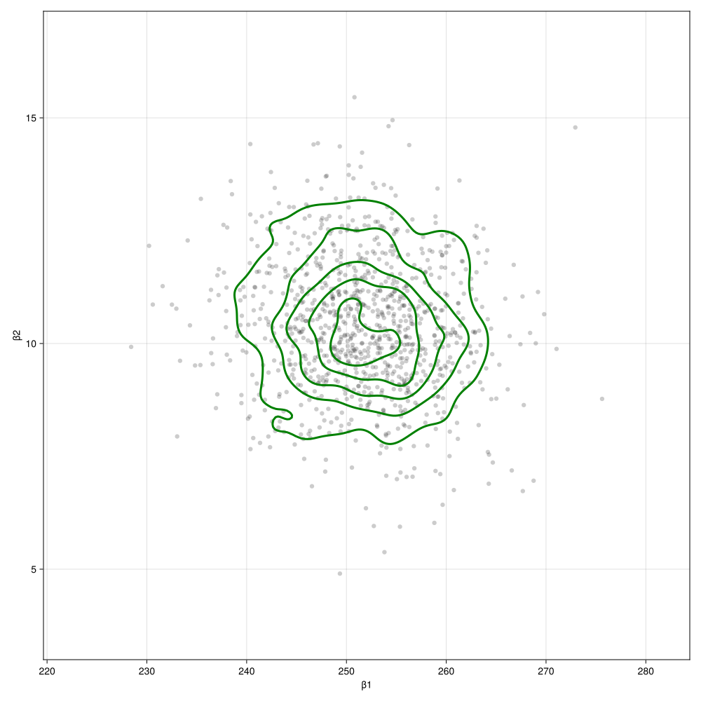
Random effects and group-level predictions
Caterpillar Plots
MixedModelsMakie.RanefInfo — Type
RanefInfoInformation on random effects conditional modes/means, variances, etc.
Used for creating caterpillar plots.
MixedModelsMakie.ranefinfo — Function
ranefinfo(m::MixedModel)Return a NamedTuple{fnames(m), NTuple(k, RanefInfo)} from model m
ranefinfo(m::MixedModel, gf::Symbol)Return a RanefInfo corresponding to the grouping variable gf model m.
MixedModelsMakie.caterpillar — Function
caterpillar(m::MixedModel, gf::Symbol; kwargs...)Returns a Figure of a "caterpillar plot" of the random-effects means and prediction intervals
A "caterpillar plot" is a horizontal error-bar plot of conditional means and standard deviations of the random effects.
gf specifies which grouping variable is displayed.
kwargs... are passed on to caterpillar!.
MixedModelsMakie.caterpillar! — Function
caterpillar!(f::Indexable, r::RanefInfo;
orderby=1, cols::Union{Nothing,AbstractVector}=nothing,
dotcolor=(:red, 0.2), barcolor=:black,
vline_at_zero::Bool=false)
caterpillar!(f::Indexable, m::MixedModel,
gf::Symbol=first(fnames(m)); orderby=1,
cols::Union{Nothing,AbstractVector}=nothing,
dotcolor=(:red, 0.2), barcolor=:black,
vline_at_zero::Bool=false)Add Axes of a caterpillar plot from r to f.
When passing a MixedModel, gf specifies which grouping variable is displayed. Alternatively, ranefinfo may be used to construct the RanefInfo object directly. Constructing RanefInfo directly can be used to avoid re-computing the conditional variances.
The order of the levels on the vertical axes is increasing orderby column of r.ranef, usually the (Intercept) random effects. Setting orderby=nothing will disable sorting, i.e. return the levels in the order they are stored in.
The display can be restricted to a subset of random effects associated with a grouping variable by specifying cols, either by indices or term names.
using CairoMakie
CairoMakie.activate!(type = "svg")
using MixedModels
using MixedModelsMakie
sleepstudy = MixedModels.dataset(:sleepstudy)
verbagg = MixedModels.dataset(:verbagg)
fm1 = fit(MixedModel, @formula(reaction ~ 1 + days + (1 + days|subj)), sleepstudy; progress=false)
gm0 = fit(MixedModel,
@formula(r2 ~ 1 + anger + gender + btype + situ + (1|subj) + (1|item)),
verbagg,
Bernoulli();
progress=false)
subjre = ranefinfo(fm1)[:subj]
caterpillar!(Figure(; size=(800,600)), subjre)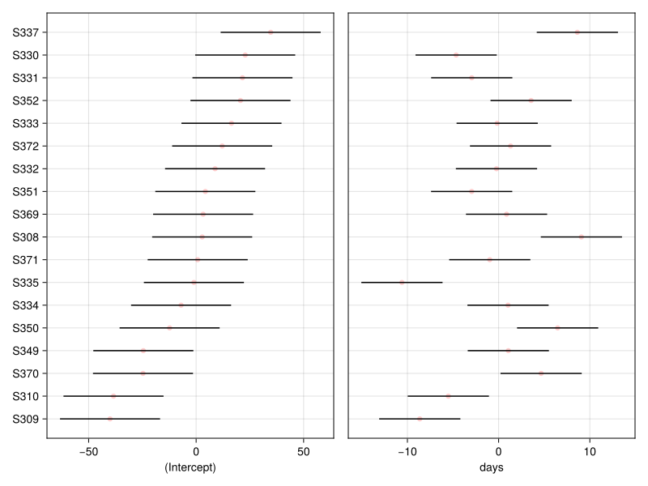
caterpillar!(Figure(; size=(800,600)), subjre; orderby=2)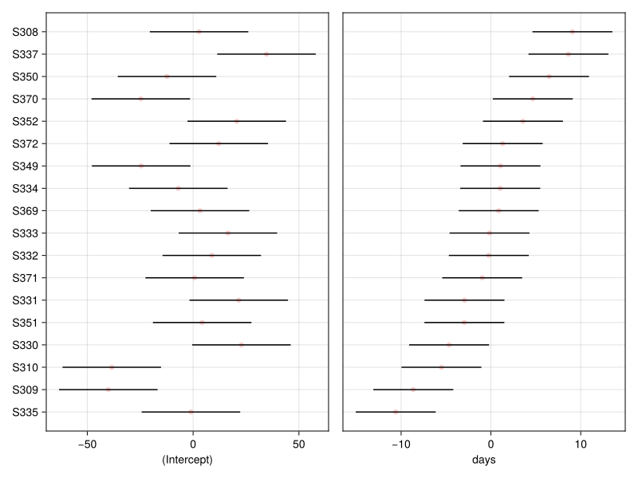
caterpillar!(Figure(; size=(800,600)), subjre; orderby=nothing)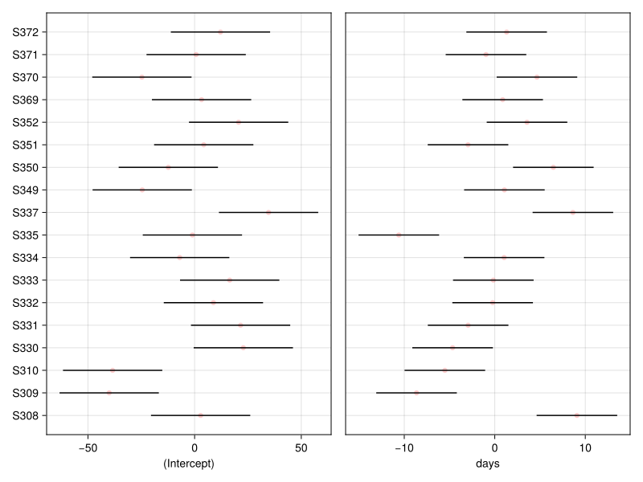
caterpillar(gm0, :item)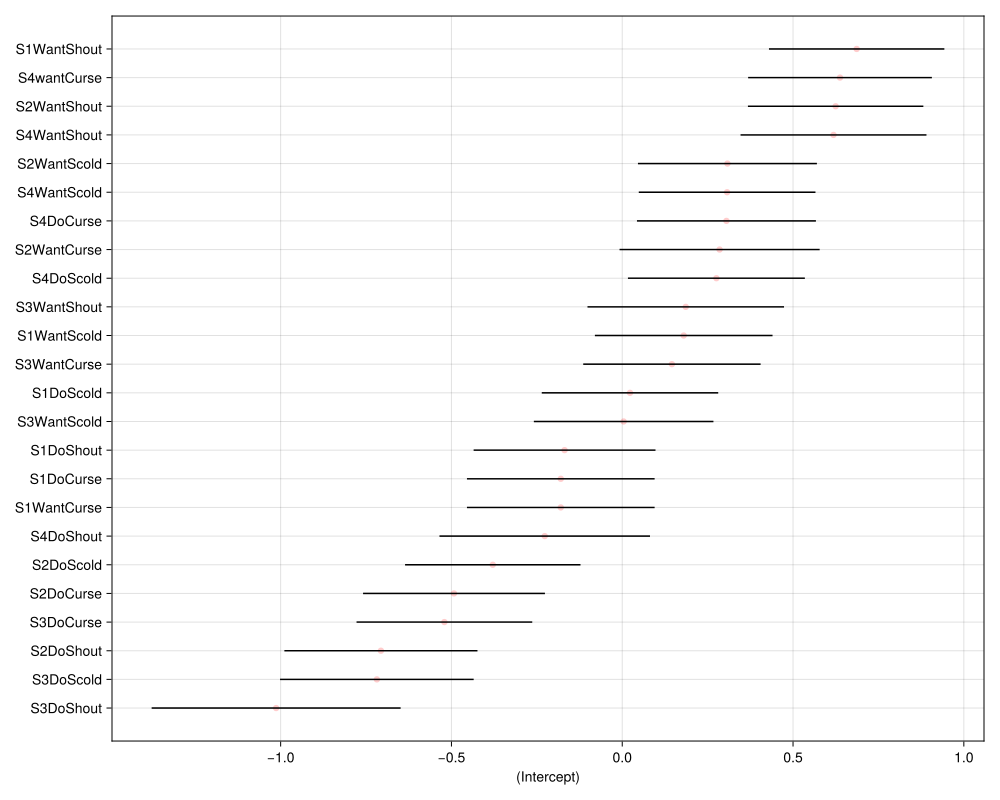
MixedModelsMakie.qqcaterpillar — Function
qqcaterpillar(m::MixedModel, gf::Symbol=first(fnames(m));
kwargs...)Returns a Figure of a "qq-caterpillar plot" of the random-effects means and prediction intervals.
gf specifies which grouping variable is displayed.
kwargs... are passed on to qqcaterpillar!.
MixedModelsMakie.qqcaterpillar! — Function
qqcaterpillar!(f::Indexable, r::RanefInfo;
cols::Union{Nothing,AbstractVector}=nothing,
dotcolor=(:red, 0.2), barcolor=:black)
qqcaterpillar!(f::Indexable, m::MixedModel,
gf::Symbol=first(fnames(m));
cols::Union{Nothing,AbstractVector}=nothing,
dotcolor=(:red, 0.2), barcolor=:black,
vline_at_zero::Bool=false)Update the figure with a caterpillar plot with the vertical axis on the Normal() quantile scale.
When passing a MixedModel, gf specifies which grouping variable is displayed. Alternatively, ranefinfo may be used to construct the RanefInfo object directly. Constructing RanefInfo directly can be used to avoid re-computing the conditional variances.
The display can be restricted to a subset of random effects associated with a grouping variable by specifying cols, either by indices or term names.
The order of the levels on the vertical axes is increasing orderby column of r.ranef, usually the (Intercept) random effects. Setting orderby=nothing will disable sorting, i.e. return the levels in the order they are stored in.
qqcaterpillar(fm1)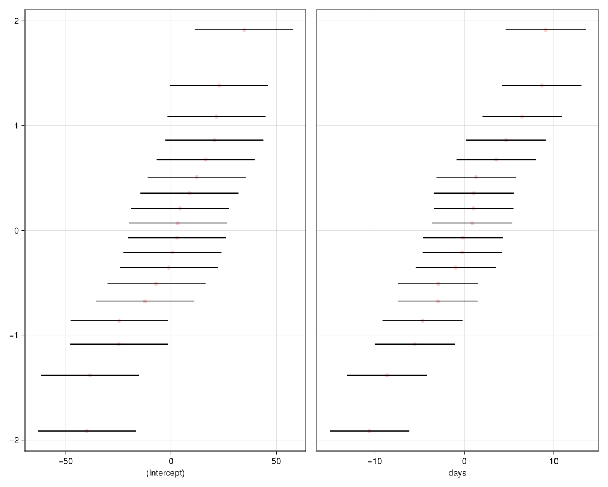
qqcaterpillar(gm0, :item)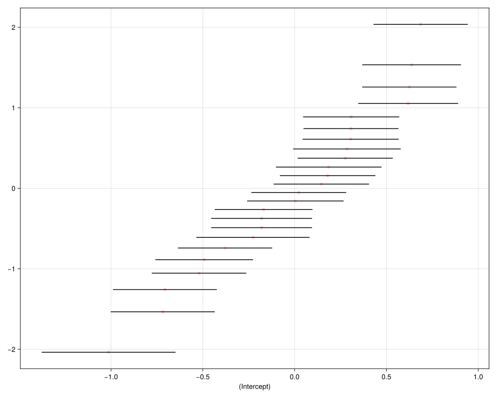
qqcaterpillar!(Figure(; size=(400,300)), subjre; cols=[1])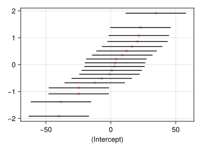
qqcaterpillar!(Figure(; size=(400,300)), subjre; cols=[:days])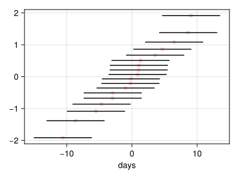
Shrinkage Plots
MixedModelsMakie.shrinkageplot — Function
shrinkageplot(m::MixedModel, gf::Symbol=first(fnames(m)), θref, args...; kwargs...)Return a scatter-plot matrix of the conditional means, b, of the random effects for grouping factor gf.
Two sets of conditional means are plotted: those at the estimated parameter values and those at θref. The default θref results in Λ being a very large multiple of the identity. The corresponding conditional means can be regarded as unpenalized.
args... and kwargs... are passed on to shrinkageplot!
MixedModelsMakie.shrinkageplot! — Function
shrinkageplot!(f::Indexable, m::MixedModel,
gf::Symbol=first(fnames(m)), θref;
ellipse=false, ellipse_scale=1, n_ellipse=5,
cols::Union{Nothing,AbstractVector}=nothing,
shrunk_dotcolor=(:blue, 0.25), ref_dotcolor=(:red, 0.25),
ellipse_color=:green, ellipse_linestyle=:dash)Return a scatter-plot matrix of the conditional means, b, of the random effects for grouping factor gf.
Two sets of conditional means are plotted: those at the estimated parameter values and those at θref. The default θref results in Λ being a very large multiple of the identity. The corresponding conditional means can be regarded as unpenalized.
The display can be restricted to a subset of random effects associated with a grouping variable by specifying cols, either by indices or term names.
Correlation ellipses can be added with ellipse=true, with the number of ellipses controlled by n_ellipse. The ellipses are equally spaced between the outer ellipse and the origin (center). The scaling of the ellipses can be adjusted with the multiplicative ellipse_scale. If you are unable to see the ellipses, try increasing ellipse_scale.
using CairoMakie
# The SVG sometimes renders incorrectly,
# so you may want to use PNG here
CairoMakie.activate!(; type="svg")
using MixedModels
using MixedModelsMakie
sleepstudy = MixedModels.dataset(:sleepstudy)
verbagg = MixedModels.dataset(:verbagg)
fm1 = fit(MixedModel, @formula(reaction ~ 1 + days + (1 + days|subj)), sleepstudy; progress=false)
shrinkageplot(fm1)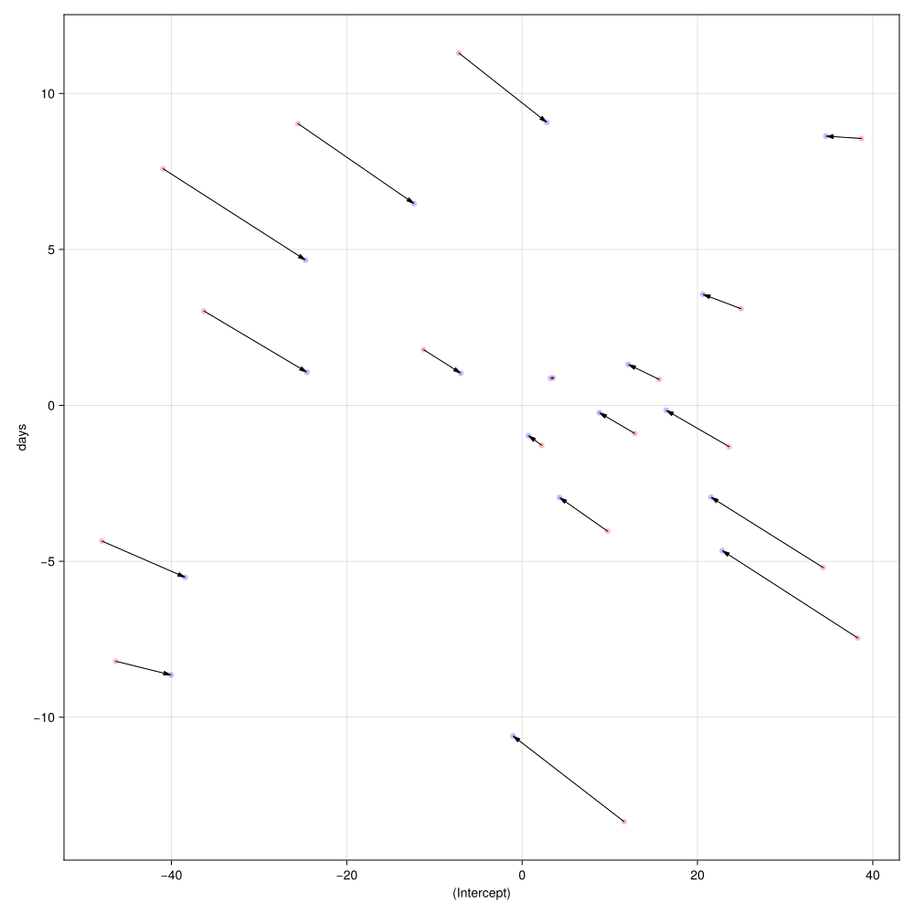
shrinkageplot(fm1; ellipse=true)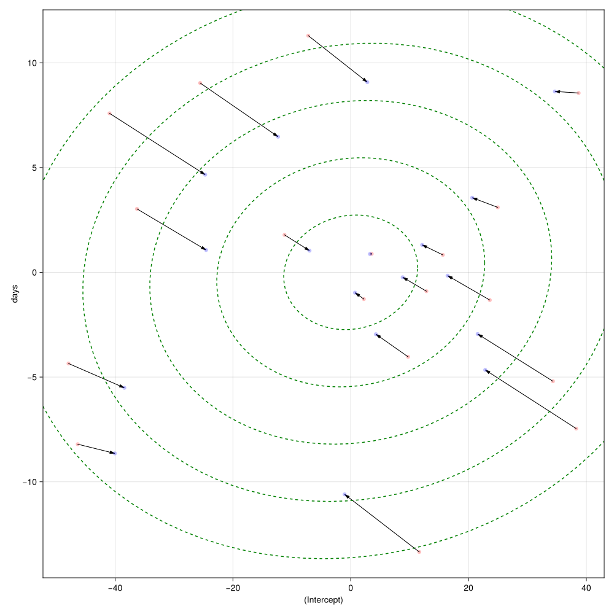
shrinkageplot!(Figure(; size=(400,400)), fm1)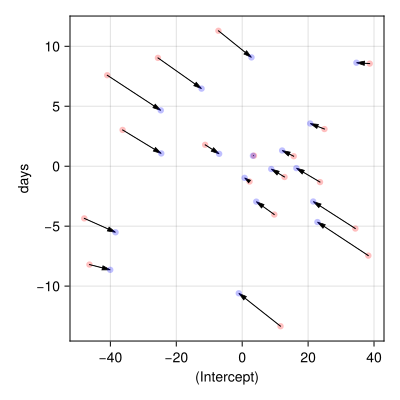
gm1 = fit(MixedModel,
@formula(r2 ~ 1 + anger + gender + btype + situ + (1|subj) + (1+gender|item)),
verbagg,
Bernoulli();
progress=false)
shrinkageplot(gm1, :item)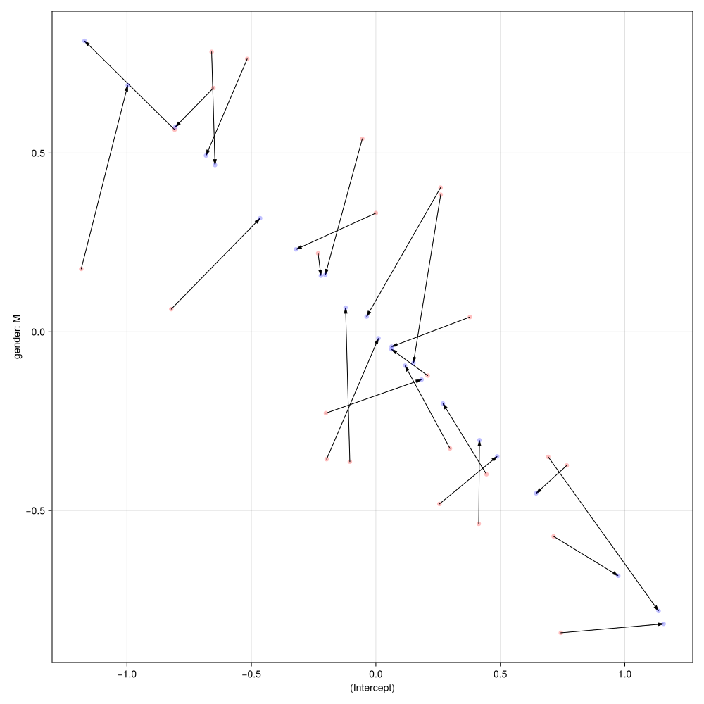
Diagnostics
We have also provided a few useful plot recipes for common plot types applied to mixed models. These are especially useful for diagnostics and model checking.
QQ Plots
The methods for qqnorm and qqplot are implemented using Makie recipes. In other words, these are convenience wrappers for calling the relevant plotting methods on residuals(model).
Specify the type of line on the QQ plots with the qqline keyword-argument. The default for qqnorm is :fitrobust, which delivers an R-style line connecting the first and third quartiles. The default for qqplot is :identity, which plots the line with slope = 1 and intercept = 0. The final possibility is :fit, which plots the line of best fit (i.e. regressing the quantiles of the residuals onto the quantiles of the reference distribution).
The reference distribution for qqnorm is the standard normal, which differs from the behavior in previous versions of Makie.
The options and associated names for the qqline keyword argument changed in Makie 0.16.3 (and were broken in Makie 0.16.0-0.16.2). The equivalent to qqline=:R is qqline=:fitrobust. qqline=:R will be supported for backwards compatibility only until the next breaking release.
using CairoMakie
CairoMakie.activate!(; type="svg")
using MixedModels
using MixedModelsMakie
sleepstudy = MixedModels.dataset(:sleepstudy)
fm1 = fit(MixedModel, @formula(reaction ~ 1 + days + (1 + days|subj)), sleepstudy; progress=false)
qqnorm(fm1; qqline=:fitrobust)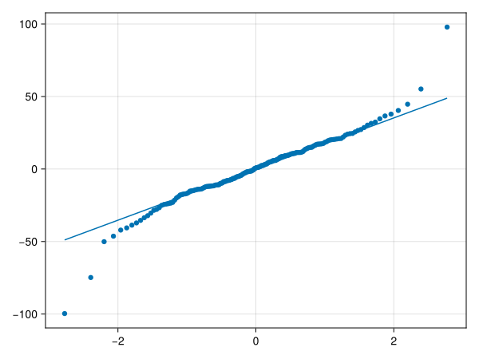
# the residuals should have mean 0
# and standard deviation equal to the residual standard deviation
qqplot(Normal(0, fm1.σ), fm1)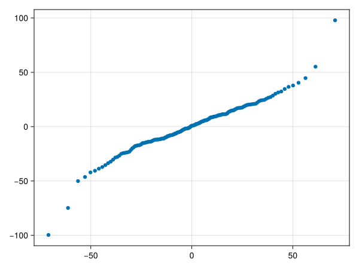
Profile Plots
Requires MixedModels 4.14 or above.
using CairoMakie
CairoMakie.activate!(; type="svg")
using MixedModels
using MixedModelsMakie
sleepstudy = MixedModels.dataset(:sleepstudy)
fm1 = fit(MixedModel, @formula(reaction ~ 1 + days + (1 + days|subj)), sleepstudy; progress=false)
pr1 = profile(fm1)
zetaplot(pr1)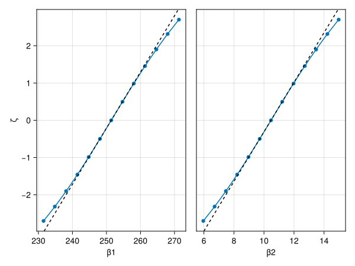
# show zeta on the absolute value scale with coverage intervals
zetaplot(pr1; absv=true)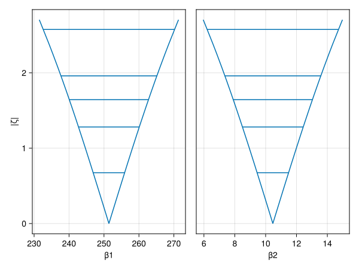
# show zeta for the variance components
zetaplot(pr1; absv=true, ptyp='θ')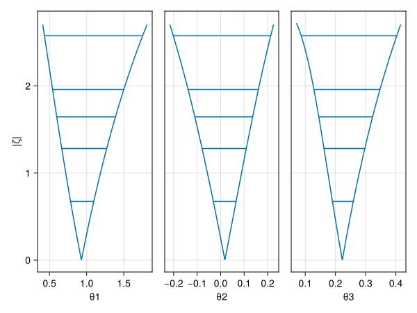
profiledensity(pr1)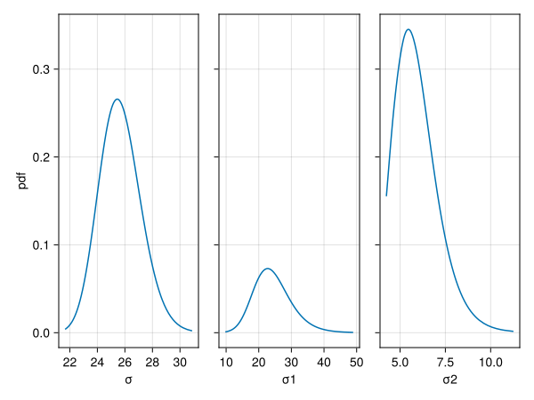
profiledensity(pr1; share_y_scale=false)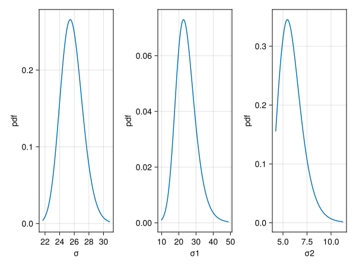
profiledensity(pr1; ptyp='σ')
UpSet Plots
UpSet plots[upset] visualize the intersection structure of categorical conditions, showing which combinations of condition levels co-occur in the data and how many observations (or grouping-factor levels) fall in each combination.
Sets are the individual levels of each categorical predictor (e.g., "gender: M", "gender: F", "btype: curse"). Columns of the combination matrix are the full factorial cells (every combination of each level per predictor) plus marginal cells where all levels of a single predictor are simultaneously active (showing whether that predictor is within-subjects or between-subjects). A filled circle means that condition level is active in that column; a connecting line spans the active conditions within each column. The top bars show counts per column; the left bars show counts per individual condition level.
A column in which only within-subjects predictors are collapsed will have non-zero counts; a column where a between-subjects predictor is collapsed will be empty because no single unit can appear in all levels of a between-subjects factor.
MixedModelsMakie.upsetplot — Function
upsetplot(m::MixedModel,
gf::Union{Symbol,Nothing}=first(fnames(m));
kwargs...)Return a Figure with an UpSet plot showing which levels of grouping factor gf appear in which categorical fixed-effect conditions.
Pass gf=nothing to count observations instead of grouping-factor levels.
Predictor names, levels, and per-observation values are recovered from the model's formula, design matrix, and contrast coding — no original data frame is needed.
kwargs are forwarded to upsetplot!.
upsetplot(data; cols=All(), gf::Union{Symbol,Nothing}=nothing, kwargs...)Return a Figure with an UpSet plot built directly from a Tables.jl-compatible table.
Non-numeric columns (optionally restricted by cols) are used as sets. Pass gf=:col to count unique values of that column per cell instead of observations.
kwargs are forwarded to upsetplot!.
MixedModelsMakie.upsetplot! — Function
upsetplot!(f::Indexable, m::MixedModel,
gf::Union{Symbol,Nothing}=first(fnames(m));
sortby::Symbol=:count,
show_empty::Bool=true,
orientation::Symbol=:horizontal,
show_setsize::Bool=true,
intersection_pos::Symbol=...,
setsize_pos::Symbol=...,
filled_color=:black,
empty_color=:lightgray,
bar_color=:steelblue,
dot_size=12)Add an UpSet plot to f showing which levels of grouping factor gf appear in which categorical fixed-effect conditions.
Predictor names, levels, and per-observation values are recovered from the model's formula, design matrix, and contrast coding — no original data frame is needed.
Layout keywords:
orientation::horizontal(default — combinations as columns, sets as rows) or:vertical(combinations as rows, sets as columns).show_setsize: show the set-size bar chart (trueby default).intersection_pos: where the intersection-size bars go relative to the incidence matrix —:top/:bottom(horizontal) or:left/:right(vertical).setsize_pos: where the set-size bars go —:left/:right(horizontal) or:top/:bottom(vertical).
upsetplot!(f::Indexable, data;
cols=All(),
gf::Union{Symbol,Nothing}=nothing,
sortby::Symbol=:count,
show_empty::Bool=true,
orientation::Symbol=:horizontal,
show_setsize::Bool=true,
intersection_pos::Symbol=...,
setsize_pos::Symbol=...,
filled_color=:black,
empty_color=:lightgray,
bar_color=:steelblue,
dot_size=12)Add an UpSet plot to f directly from a Tables.jl-compatible table.
Non-numeric columns (optionally restricted by cols) become the sets. Pass gf=:col to count unique values of that column per cell instead of observations.
See upsetplot!(::Indexable, ::MixedModel) for layout keyword details.
using CairoMakie
CairoMakie.activate!(; type="svg")
using DataFrames: Not
using MixedModels
using MixedModelsMakie
verbagg = MixedModels.dataset(:verbagg)
gm1 = fit(MixedModel,
@formula(r2 ~ 1 + anger + gender + btype + situ + (1|subj) + (1+gender|item)),
verbagg, Bernoulli(); progress=false)
# gender is between-subjects; btype and situ are within-subjects.
# Marginal cells that collapse gender are empty (no subject has both genders),
# while marginals that collapse btype or situ are non-empty.
upsetplot(gm1, :subj, show_empty=false)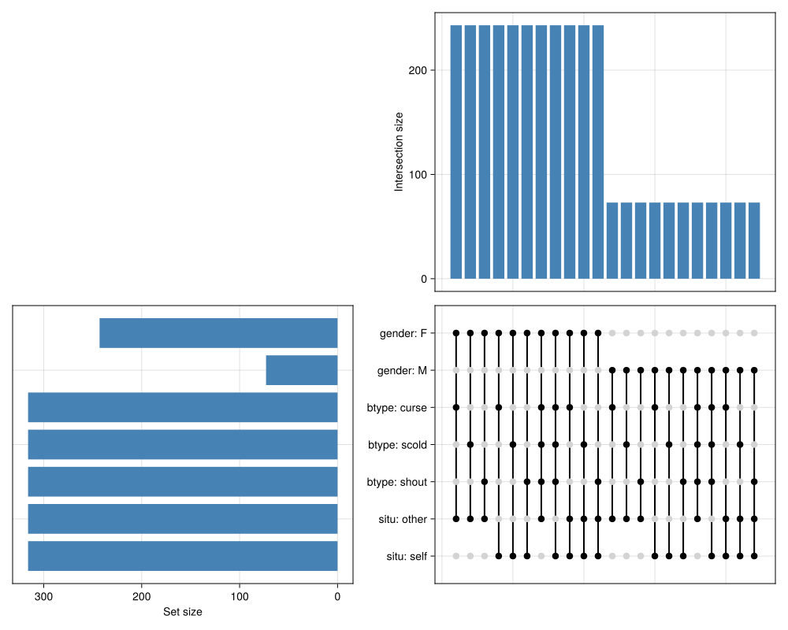
# Observation counts instead of subject counts
upsetplot(gm1, nothing, show_empty=false)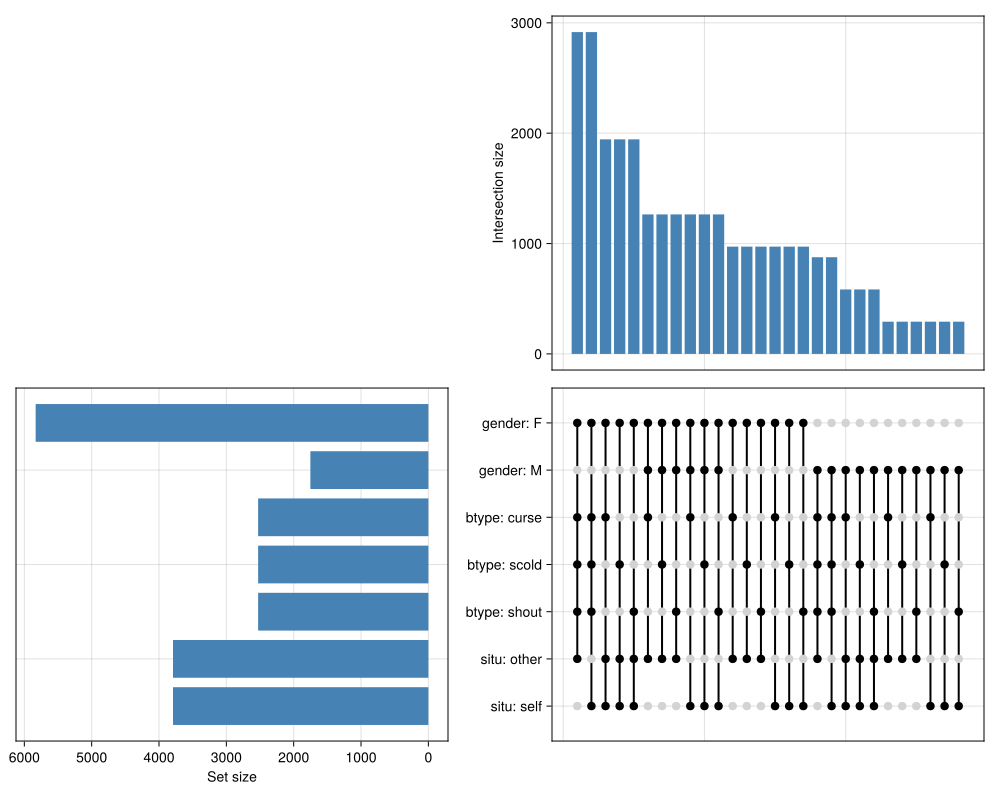
# Table-based: no model required — non-numeric columns are detected automatically.
# Numeric columns (anger) and explicit exclusions (subj, item, r2) are dropped.
upsetplot(verbagg; cols=Not([:subj, :item, :r2]), gf=:subj, show_empty=false)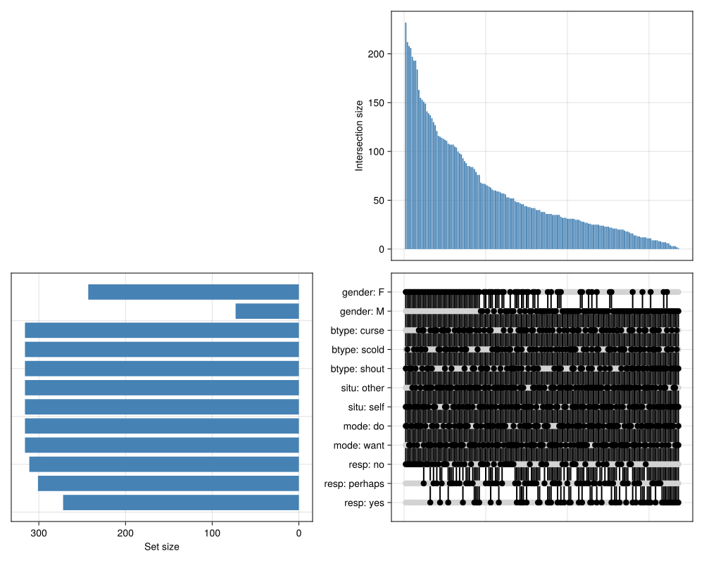
# Sort by degree (full factorial cells first, then marginals) rather than by count
upsetplot(gm1, :subj, sortby=:degree, show_empty=false)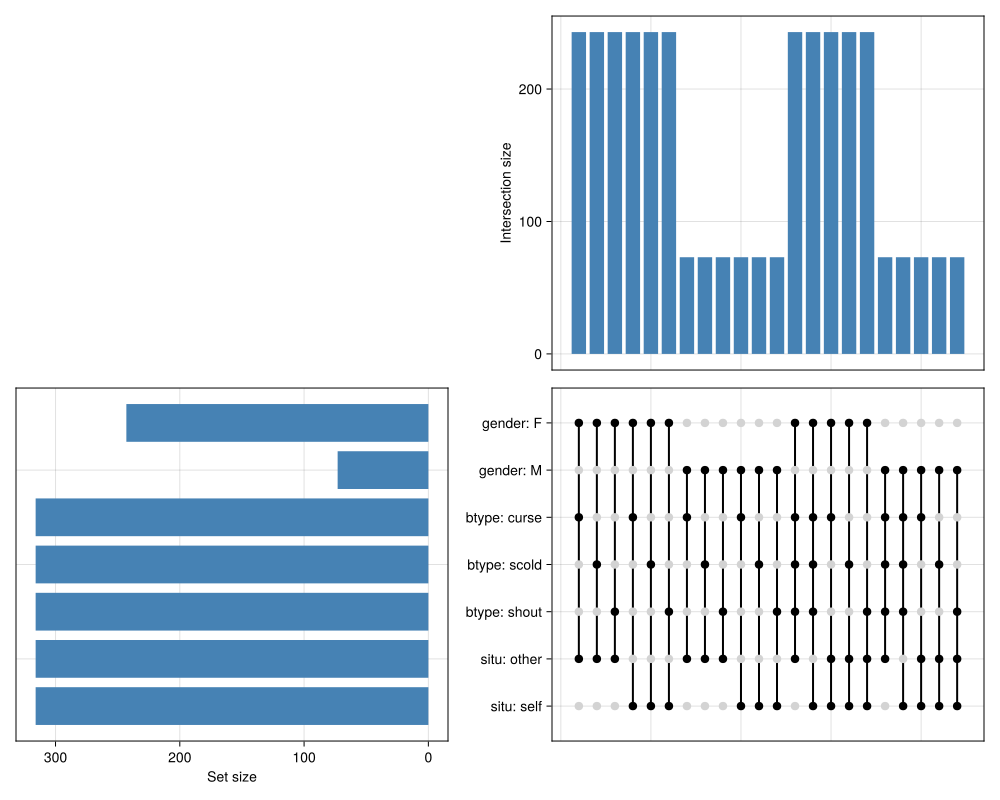
The same incidence data drawn by upsetplot can be pulled out as a table with upsettable, for cases where you want to filter, sort, or re-analyze it directly rather than (or in addition to) plotting it:
MixedModelsMakie.upsettable — Function
upsettable(m::MixedModel, gf::Union{Symbol,Nothing}=first(fnames(m)))Return the incidence table underlying upsetplot: one row per combination cell (every full factorial cell of the categorical fixed-effect predictors, plus marginal cells that collapse a single predictor), with:
cell: a label for the combinationdegree: the number of predictors involved (one fewer for marginal cells)count: the number of observations (or grouping-factor levels, ifgfis given) falling in the cell- one
Boolcolumn per set (an individual condition level, e.g."gender: M") indicating whether that set is active in the cell
Pass gf=nothing to count observations instead of grouping-factor levels, matching upsetplot.
upsettable(data; cols=All(), gf::Union{Symbol,Nothing}=nothing)Return the incidence table underlying upsetplot, built directly from a Tables.jl-compatible table. See upsetplot for the meaning of cols and gf.
first(upsettable(gm1, :subj), 10)| Row | cell | degree | count | gender: F | gender: M | btype: curse | btype: scold | btype: shout | situ: other | situ: self |
|---|---|---|---|---|---|---|---|---|---|---|
| String | Int64 | Int64 | Bool | Bool | Bool | Bool | Bool | Bool | Bool | |
| 1 | gender: F & btype: curse & situ: other | 3 | 243 | true | false | true | false | false | true | false |
| 2 | gender: M & btype: curse & situ: other | 3 | 73 | false | true | true | false | false | true | false |
| 3 | gender: F & btype: scold & situ: other | 3 | 243 | true | false | false | true | false | true | false |
| 4 | gender: M & btype: scold & situ: other | 3 | 73 | false | true | false | true | false | true | false |
| 5 | gender: F & btype: shout & situ: other | 3 | 243 | true | false | false | false | true | true | false |
| 6 | gender: M & btype: shout & situ: other | 3 | 73 | false | true | false | false | true | true | false |
| 7 | gender: F & btype: curse & situ: self | 3 | 243 | true | false | true | false | false | false | true |
| 8 | gender: M & btype: curse & situ: self | 3 | 73 | false | true | true | false | false | false | true |
| 9 | gender: F & btype: scold & situ: self | 3 | 243 | true | false | false | true | false | false | true |
| 10 | gender: M & btype: scold & situ: self | 3 | 73 | false | true | false | true | false | false | true |
Nesting/Crossing Plots
Grouping factors in a mixed model (e.g. subj, item, school, class) can be nested (every level of one occurs with exactly one level of another, as with students nested within classrooms in a single year) or crossed (levels of both factors co-occur relatively freely, as with subjects and items in a repeated-measures design). nestingplot shows this structure for every pair of grouping factors in a model.
The plot is laid out like a correlation matrix:
- diagonal: each grouping factor's name and number of levels.
- lower triangle: a heatmap of the co-occurrence contingency table between the row and column factor. Levels are reordered (for display only) to group each level with its most common partner, so nested structure appears as a block-diagonal pattern and crossed structure appears as a dense or scattered rectangle.
- upper triangle: a text badge classifying the same pair — one factor nested in the other (
A ⊂ B),identical(the two names partition observations the same way, e.g. two labels for one grouping factor), or crossed, further split intocomplete(every combination of levels is observed) andpartial(only some combinations are, with the observed density reported). This split matters in practice: a completely-crossed subject × item design supports estimating both by-subject and by-item slopes for every condition, while a partially crossed (e.g. Latin-square) design may not.
Pass swap_triangles=true to swap which triangle shows which — heatmaps in the upper triangle and text badges in the lower.
MixedModelsMakie.nestingplot — Function
nestingplot(m::MixedModel, gfs::Union{Symbol,AbstractString,Integer}...;
colormap=:Blues, fontsize::Real=20, swap_triangles::Bool=false)Return a Figure with a nesting/crossing matrix for the grouping factors of m. See nestingplot! for details.
MixedModelsMakie.nestingplot! — Function
nestingplot!(f::Indexable, m::MixedModel,
gfs::Union{Symbol,AbstractString,Integer}...;
colormap=:Blues, fontsize::Real=20, swap_triangles::Bool=false)Add a nesting/crossing matrix for the grouping factors of m to f.
Each distinct grouping factor (e.g. subj, item) becomes one row/column of a matrix, laid out like a correlation-matrix plot:
- diagonal: factor name and number of levels
- lower triangle (upper if
swap_triangles=true): a heatmap of the co-occurrence contingency table between the row and column factor. Rows and columns are reordered (for display only) to group each level with its most common partner, so that nested structure appears as a block-diagonal pattern and crossed structure appears as a dense or scattered rectangle. - upper triangle (lower if
swap_triangles=true): a text badge classifying the same pair as one factor nested in the other (A ⊂ B),identical(the two names partition observations the same way), orcrossed—completeif every combination of levels is observed,partial(with the observed density) otherwise.
gfs, if given, restricts and orders which grouping factors to show (by name or index); otherwise all distinct grouping factors are shown, in the order they first appear in the model.
The classification only depends on the grouping factors' level assignments (ReMat.refs), not on the original data, matching the model-based approach used by upsetplot.
using CairoMakie
CairoMakie.activate!(; type="svg")
using MixedModels
using MixedModelsMakie
kb07 = MixedModels.dataset(:kb07)
gm2 = fit(MixedModel,
@formula(rt_trunc ~ 1 + spkr * prec * load +
(1 + spkr + prec + load | subj) +
(1 + spkr | item)),
kb07; progress=false)
# subj and item are nearly (but not perfectly) crossed in this design
nestingplot(gm2)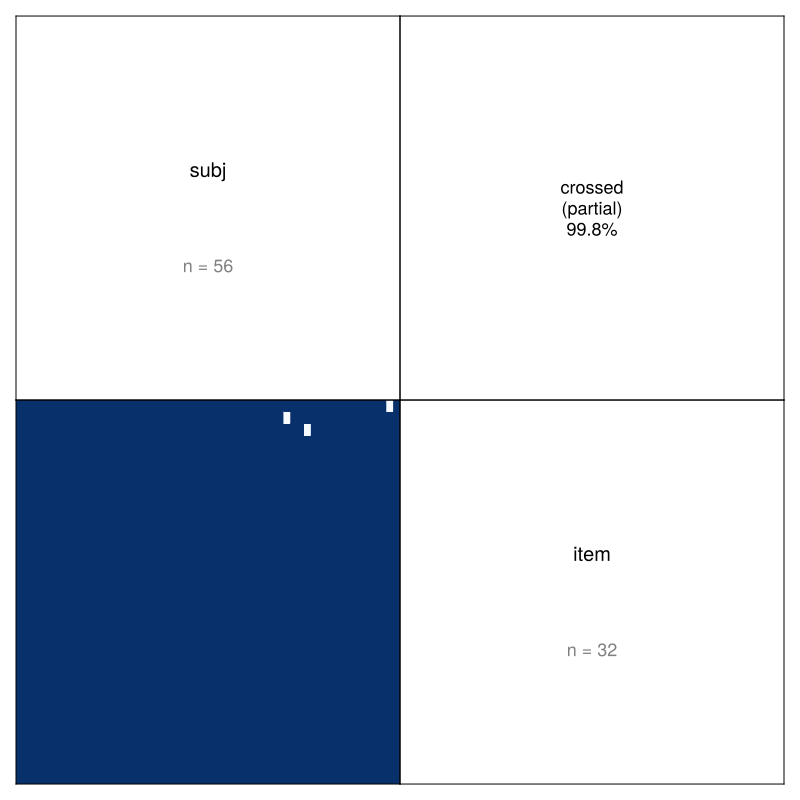
As with upsetplot, the data underlying nestingplot is available as tables. nestingtable gives the raw co-occurrence counts in long format, with one row per pair of levels — including zero-count rows for combinations that never co-occur, since those absences are exactly what reveal nesting or partial crossing:
MixedModelsMakie.nestingtable — Function
nestingtable(m::MixedModel, gfs::Union{Symbol,AbstractString,Integer}...)Return the co-occurrence table underlying nestingplot, in long format: one row per combination of a level of grouping factor A and a level of grouping factor B, for every pair of distinct grouping factors in m (restricted/ordered by gfs, as in nestingplot). Columns:
factor_a,level_a,factor_b,level_b: the pair of levelscount: the number of observations sharing that pair of levels (0for combinations that never co-occur — these absences are what reveal nesting or partial crossing)
See nestingstructure for the pairwise nested/crossed classification instead of the raw counts.
first(nestingtable(gm2), 10)| Row | factor_a | level_a | factor_b | level_b | count |
|---|---|---|---|---|---|
| String | String | String | String | Int64 | |
| 1 | item | I01 | subj | S030 | 1 |
| 2 | item | I01 | subj | S031 | 1 |
| 3 | item | I01 | subj | S034 | 1 |
| 4 | item | I01 | subj | S035 | 1 |
| 5 | item | I01 | subj | S036 | 1 |
| 6 | item | I01 | subj | S037 | 1 |
| 7 | item | I01 | subj | S038 | 1 |
| 8 | item | I01 | subj | S039 | 1 |
| 9 | item | I01 | subj | S041 | 1 |
| 10 | item | I01 | subj | S042 | 1 |
Filtering to count == 0 finds specific missing combinations, e.g. the subjects who never saw a particular item:
filter(:count => iszero, nestingtable(gm2))| Row | factor_a | level_a | factor_b | level_b | count |
|---|---|---|---|---|---|
| String | String | String | String | Int64 | |
| 1 | item | I05 | subj | S086 | 0 |
| 2 | item | I23 | subj | S082 | 0 |
| 3 | item | I24 | subj | S102 | 0 |
nestingstructure gives the pairwise nested/crossed classification and density shown in nestingplot's upper-triangle badges. This results in one row per pair of grouping factors, rather than one row per pair of levels:
MixedModelsMakie.nestingstructure — Function
nestingstructure(m::MixedModel, gfs::Union{Symbol,AbstractString,Integer}...)Return the pairwise nested/crossed classification underlying nestingplot's upper-triangle badges: one row per pair of distinct grouping factors in m (restricted/ordered by gfs, as in nestingplot), with:
factor_a,factor_b: the pair of grouping factorsn_levels_a,n_levels_b: their numbers of levelsrelationship: one of:identical,:a_nested_in_b,:b_nested_in_a,:complete_crossing, or:partial_crossingdensity: the fraction of then_levels_a × n_levels_bgrid of combinations that is actually observed (1.0for:complete_crossing)
See nestingtable for the raw per-level co-occurrence counts instead of this per-pair summary.
nestingstructure(gm2)| Row | factor_a | factor_b | n_levels_a | n_levels_b | relationship | density |
|---|---|---|---|---|---|---|
| String | String | Int64 | Int64 | Symbol | Float64 | |
| 1 | item | subj | 32 | 56 | partial_crossing | 0.998326 |
General plots
We also provide a splom or scatter-plot matrix plot for data frames with numeric columns (i.e. a matrix of all pairwise plots). These plots can be used to visualize the joint distribution of, say, the parameter estimates from a simulation.
MixedModelsMakie.splom! — Function
splom!(f::Indexable, df::DataFrame)Create a scatter-plot matrix in f from the columns of df.
Non-numeric columns are ignored.
using CairoMakie
CairoMakie.activate!(; type="svg")
using DataFrames
using LinearAlgebra
using MixedModelsMakie
data = rmul!(randn(100, 3), LowerTriangular([+1 +0 +0;
+1 +1 +0;
-1 -1 +1]))
df = DataFrame(data, [:x, :y, :z])
splom!(Figure(; size=(800, 800)), df)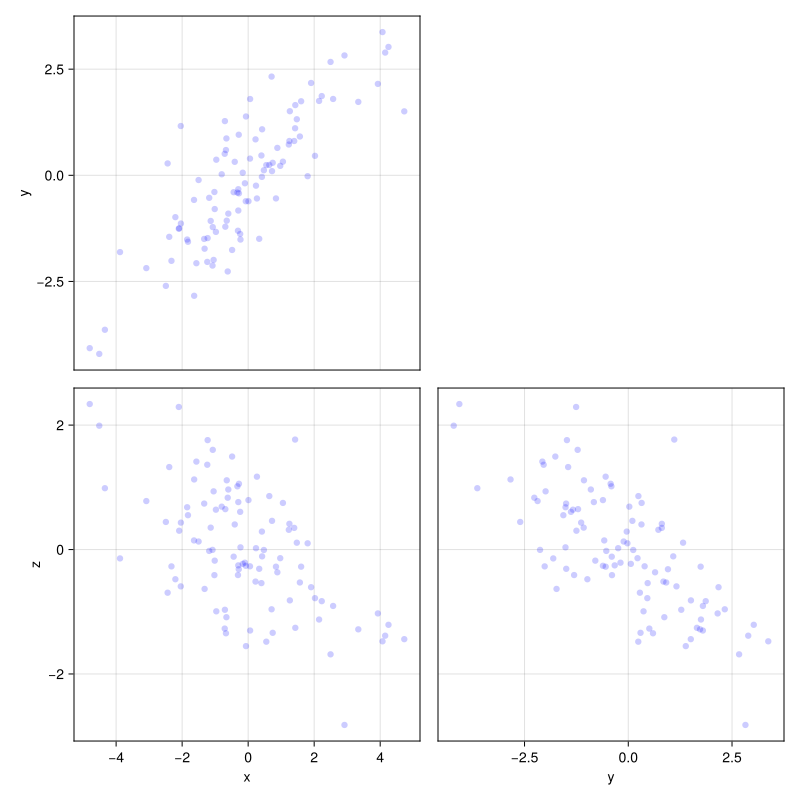
Meanwhile, splomaxes! provides a lower-level backend for splom!
MixedModelsMakie.splomaxes! — Function
splomaxes!(f::Indexable, labels::AbstractVector{<:AbstractString},
panel!::Function, args...;
extraticks::Bool=false, kwargs...)Populate f with a set of (k*(k-1))/2 axes in a lower triangle for all pairs of labels, where k is the length of labels. The panel! function should have the signature panel!(ax::Axis, i::Integer, j::Integer, args...; kwargs...) and should draw the [i,j] panel in ax.
using Statistics
mat = Array(df)
function pfunc(ax, i, j)
# note that this references mat from the outer scope!
# [j, i] because:
# - i is the row in the figure, which corresponds to the y var in each panel
# - j is the col in the figure, which corresponds to the x var in each panel
v = view(mat, :, [j, i])
scatter!(ax, v; color=(:blue, 0.2))
cc = cor(eachcol(v)...)
cc = round(cc; digits=2)
text!(ax, "r=$(cc)")
return ax
end
splomaxes!(Figure(; size=(800, 800)),
names(df), pfunc)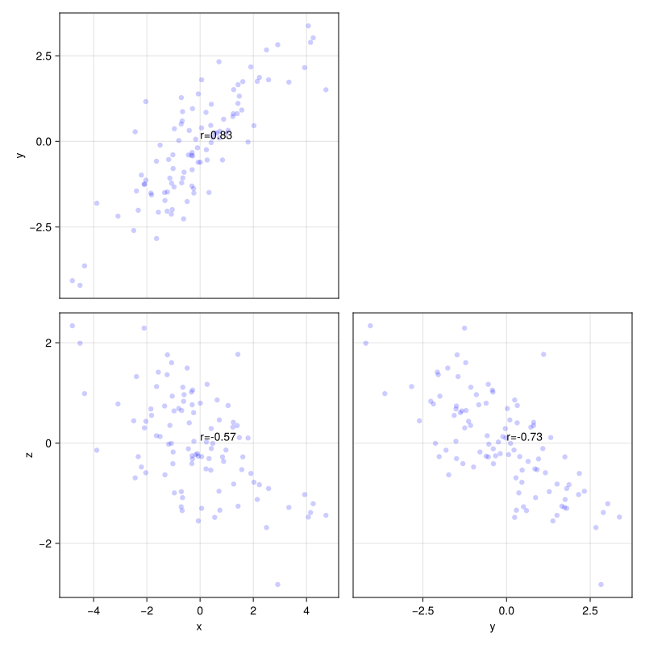
- upsetLex, A., Gehlenborg, N., Strobelt, H., Vuillemot, R., & Pfister, H. (2014). UpSet: Visualization of Intersecting Sets. IEEE Transactions on Visualization and Computer Graphics, 20(12), 1983–1992. https://doi.org/10.1109/TVCG.2014.2346248